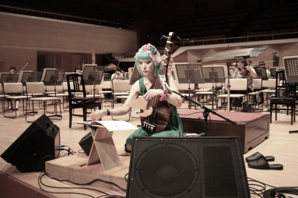

ハラキリ乙女 (2012)
for biwa and orchestra
solo Biwa + Orchestra (3121, 4221, 4perc, hp, pf, cel, strings)
Duration: 14min.
Kakushin Nishihara biwa, Etienne Siebens conductor, Polish National Radio Symphony Orchestra in Katowice
Warsaw Autumn, Warsaw Philharmonic 29. Sep. 2018
Satsuma Biwa is a Japanese instrument which has been developed as one of the ways of acquiring culture in medieval times, and which has been used mainly for the warrior tales. From the point of view of the western music, the structure of this instrument is not rational, its tone interval is unstable, and it produces sounds comprising the noise (against the musical tone) called “Sawari”. It has been said that Japanese people’s ears are traditionally familiar with this kind of sound.
I was born in Japan and have learned the western music surrounded by it. So, for me, to learn about Biwa was to step into unknown territory, and at the same time, to rediscover a sense sleeping in my deep inside.
The title “HARAKIRI” showed that an image of the Japanese word “HARAKIRI” has its own wings and is known worldwide backed by too much information via internet and so on nowadays, and the image has been signified kitschy as a “Japanese” thing. “Harakiri” or “Seppuku” means a form of Japanese ritual suicide for samurai (warrior) with cutting belly by a dagger. I tried to depict a texture when one cuts the skin by a dull edge-tool like a utility knife in the present era when we don’t usually use a sword. Biwa cuts the space, then a mass of large quantity of silent substances overflows from the orchestra; the substances are organs of a maiden which are based around the color shocking pink and full of materials and dreams.
Here I would like to express my gratitude to Ms. Kakushin Nishihara, a sculptor and a Biwa player. Two years ago, my other piece Dot Collection No. 6 was inspired by her work of the plastic arts, and this time she has motivated me for composing this piece again.
Akiko Yamane
薩摩琵琶は古くは武士の教養として発展し主に戦記物を語ってきた。西洋音楽の視点から見ると琵琶は合理的な楽器とは言えず、音程は不安定で、楽音に加えてサワリというノイズとともに奏される。これは、伝統的に日本では好ましい音とされてきた。
日本に生まれ西洋音楽に囲まれて西洋音楽を学んできた私にとって、琵琶を知ることは未知の領域に踏み込むことであったと同時に、感覚を再発見していくことでもあった。
いま海を越えて通じる「HARAKIRI」という言葉の、インターネットをはじめ情報が溢れる中イメージが一人歩きし、日本的なものとしてキッチュに記号化されている様をタイトルにした。ハラキリ、切腹とは武士が腹部を短刀で切り裂く自死の作法。描こうとしたのは、刀を持たない現代において、カッターなどの鈍い刃物で斬りつけるような質感。琵琶が空間を切りつけ、オーケストラから溢れ出すのはショッキングピンクを基調に夢いっぱいつまった乙女の器官であり大量のもの言わぬ物質の塊。
2年前、オーケストラ作品《水玉コレクションNo. 6》を書く際にインスピレーションを与えてくれた琵琶奏者の西原鶴真から、今作をつくるにあたっても大きな力をいただいた。
山根明季子
commissioned by Suntory Foundation of Arts
premiered in Tokyo, August 26.2012
by Kakushin Nishihara biwa, Takeshi Ooi conductor, New Japan Philharmonic